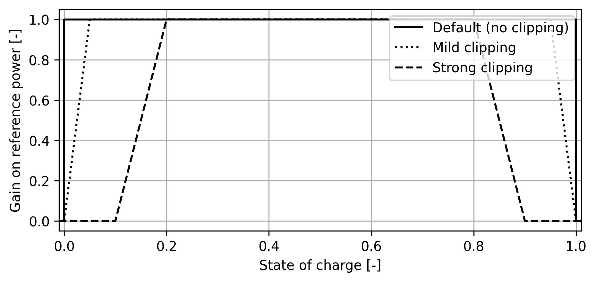

Controllers#
The hycon.controllers module contains a library of wind and hybrid power plant
controllers. Each controller must inherit from ControllerBase (see
controller_base.py) and implement a
mandatory compute_controls() method, which contains the relevant control
algorithm. compute_controls() must accept a single argument dictionary
(nominally called measurement_dict) that contains the necessary input
signals and return a second dictionary (nominally called controls_dict) that
returns the control actions. In the basic set up, measurement_dict is
provided to compute_controls() by the step() method defined on
ControllerBase, and the returned controls_dict is then passed via the
interface at the conclusion of the step() method. In addition, controllers must
also implement a method set_controller_parameters() that accepts a dictionary of controller parameters. If no parameters are needed, this may simple be an empty
method (but it is still required).
Controller structure and inputs/outputs#
Each controller is structured as a class that inherits from ControllerBase. The
constructor for each controller must accept the following arguments:
interface: the interface object that the controller will use to read in measurements and pass out control actions. See Interfaces for more details on the interface.cname: the name of the controller, which is used to read in the relevant controller parameters from the plant parameters dictionary as well as access appropriate portions of themeasurement_dict. This is a string that should match a key in the plant parameters dictionary (often, the name of the Hercules hybrid plant component).controller_parameters: a dictionary of controller parameters. The keys in this dictionary should match the keys expected by theset_controller_parameters()method for the controller. This dictionary is passed to theset_controller_parameters()method on instantiation. Details on the expected parameters for each controller are provided in the documentation for each controller below.verbose: a boolean that sets whether the controller should print out information about its operation. Defaults toFalse. Verbosity is not yet fully built out in Hycon.
Available controllers#
LookupBasedWakeSteeringController#
Yaw controller that implements wake steering based on a lookup table.
controller_parameters may include keys:
df_yaw: dataframe as produced by a FLORIS yaw optimization routine that contains the lookup table for wake steering. The keys of this dictionary are tuples of the form(wind_direction, wind_speed), and the values are lists of yaw angles for each turbine in the farm. The lookup table is sampled at 10 degree increments of wind direction and 1 m/s increments of wind speed, but this may be updated in the future to allow for more flexible sampling. See example lookup-based_wake_steering_florisstandin for example usage.hysteresis_dict: dictionary of hysteresis zones for wake steering.yaw_IC: initial yaw angles for the turbines.
Currently, yaw angles are set based purely on the (local turbine) wind direction. The lookup table is sampled at a hardcoded wind speed of 8 m/s. This will be updated in future when an interface is developed for a simulator that provides wind turbine wind speeds also. See Wake Steering Design for more details on how to produce the lookup table and hysteresis zones.
WakeSteeringROSCOStandin#
Not yet developed. May be combined into a universal simple LookupBasedWakeSteeringController.
WindFarmPowerDistributingController#
Wind farm-level power controller that simply distributes a farm-level power
reference between wind turbines evenly, without checking whether turbines are
able to produce power at the requested level. Not expected to perform well when
wind turbines are waked or cannot produce the desired power for other reasons.
However, is a useful comparison case for the WindFarmPowerTrackingController
(described below).
controller_parameters may include keys:
ramp_rate_limit: a limit on the ramp rate for the entire plant, in units of kW/s.
WindFarmPowerTrackingController#
Closed-loop wind farm-level power controller that distributes a farm-level power reference among the wind turbines in a farm and adjusts the requests made from each turbine depending on whether the power reference has been met. Further details provided in Sinner et al..
Integral action, as well as gain scheduling based on turbine saturation, has been disabled as simple proportional control appears sufficient currently. However, these may be enabled at a later date if needed.
controller_parameters may include keys:
proportional_gain: the proportional gain for the controller.ramp_rate_limit: a limit on the ramp rate for the entire plant, in units of kW/s.
HybridSupervisoryControllerGeneric#
Closed-loop supervisory controller for a hybrid plants. Reads in current power production from various components, as well as a possible plant power reference, and manages individual component controllers. Depending on the mode of operation of component controllers, enables plant-wide power tracking or independent control up to the interconnection limit. When power tracking, simply passes the plant-wide power reference to the component controllers in the reverse curtailment order until the reference is met.
controller_parameters may include keys:
component_controllers: list of (Hycon) controllers for the various components in the hybrid plant.curtailment_order: list of integers referencing thecomponent_controllerslist. Ifcurtailment_orderis not provided, the default is to curtail components in the reverse order they are provided in thecomponent_controllerslist (that is, the final component in the list is curtailed first, and the first component in the list is curtailed last).
BatteryController#
Controller to trade off battery demand response with battery degradation. The
BatteryController takes as an input the higher-level battery power reference,
and produces a modified (“input-shaped”) reference with the intention of
reducing wear and tear on the battery. Designed to create a second-order closed-loop
system response to reference inputs.
Generally speaking, increasing the controller gain k_batt increases the natural
frequency of the second-order system response, and if increased too far, can lead to
instability. The default value for k_batt is 0.1.
The BatteryController also enables clipping of the reference to throttle the
battery at high and low states of charge (SOC). This throttling is applied by specifying
four SOC thresholds between 0 and 1: below the first threshold, the reference is nullified;
between the first and second, the output reference is linearly ramped up; between the second
and third, the full reference is used; between the third and fourth, the output reference is
linearly ramped down; and above the fourth, the reference is again nullified. Examples of
this are shown below. These are specified by passing a four-element list of fractional
SOCs to
clipping_thresholds, e.g. clipping_thresholds=[0.1, 0.2, 0.8, 0.9].
The default is to apply the full reference across the full range of SOCs, i.e.
clipping_thresholds=[0, 0, 1, 1].

controller_parameters may include keys:
k_batt: the controller gain for the battery controller.clipping_thresholds: a list of four fractional SOC thresholds for clipping the battery reference as described above.
HydrogenPlantController#
Simple closed-loop controller for an off-grid power generation/hydrogen plant. The controller uses an external hydrogen reference signal to control the hydrogen production of the plant through setting the power reference signal.
Reads in current power production from the generator(s), the current hydrogen production rate, and the hydrogen rate reference. Contains logic to set the generator power reference using a proportional gain applied to the error between the current hydrogen production rate and the hydrogen production reference. The proportional gain is scaled by the current power production to handle the difference of several magnitudes between the power and the hydrogen production rate.
The power reference computed is then passed to a secondary power generation plant controller, which is assigned to the HydrogenPlantController on instantiation.
This secondary power generation controller could be WindFarmPowerTrackingController for a wind-only plant, HybridSupervisoryControllerGeneric for a hybrid generation plant, etc.
controller_parameters may include keys:
nominal_plant_power_kW: the nominal power of the electrolysis plant, used to scale the proportional gain for computing the power reference.nominal_hydrogen_rate_kgps: the nominal hydrogen production rate of the plant, used to scale the proportional gain for computing the power reference (units kg/s).generator_controller: a Hycon controller for the power generation component(s) of the plant, which is assigned to theHydrogenPlantControlleron instantiation and to which the computed power reference is passed.hydrogen_controller_gain: the proportional gain for computing the power reference from the hydrogen production error.
BatteryPriceSOCController#
Controller to capture revenues in the real-time market using a battery. The controller uses the day-ahead market prices to set threshold prices for charging and discharging in the real-time market. When the real-time price exceeds the 4th-highest hourly prices from the day-ahead market, the battery is instructed to discharge (if possible). When the real-time price is below the 4th-lowest hourly prices from the day-ahead market, the battery is instructed to charge (if possible). Otherwise, the battery remains idle.
When the battery is close to fully depleted or fully charge, the threshold for charging/discharging changes to the lowest and highest day-ahead price, respectively.
controller_parameters may include keys:
high_soc: the SOC above which the battery will only charge if the real-time price is above the 1 highest day-ahead price.low_soc: the SOC below which the battery will only discharge if the real-time price is below the 1 lowest day-ahead price.